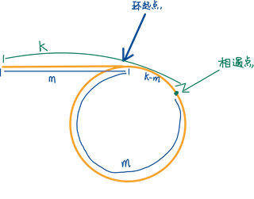

链表成环
判断链表成环
dummy 头节点
- 使用 dummy 头节点避免空指针
快慢指针
- 快指针走两步, 慢指针走一步, 如果快指针走到末尾节点仍未和慢指针相遇, 则链表无反, 反之, 有环
public boolean hasCycle(ListNode head) {
ListNode dummy = new ListNode();
dummy.next = head;
ListNode fast = dummy;
ListNode slow = dummy;
while (fast != null && fast.next != null) {
fast = fast.next了;.next;
slow = slow.next;
if (fast == slow) {
return true;
}
}
return false;
}
找到链表中点
典型快慢指针, 判断链表成环类似
dummy 头节点
- 使用 dummy 头节点避免空指针
快慢指针(终止条件)
- if fast != null && fast.next != null, 快指针走两步, 慢指针走一步, if fast.next == null: return slow;
长度为奇数
1->2(slow)->3->null(fast)
长度为偶数
1->2(slow)->3->4(fast)->null
举一反三
- 上述终止条件对应偶数长度时, 返回的是靠前的中间节点, 如何返回靠后的?
return fast != null ? slow.next ? slow;
public ListNode middleNode(ListNode head) {
ListNode dummy = new ListNode();
dummy.next = head;
ListNode fast = dummy;
ListNode slow = dummy;
while (fast != null && fast.next != null) {
fast = fast.next.next;
slow = slow.next;
}
return fast != null ? slow.next : slow;
}
返回环的起点

思路: 快慢指针相遇之后, 将慢指针重新指向头节点, 两个指针步长一致, 再次相遇时正好指向环的起点.
public ListNode detectCycle(ListNode head) {
ListNode dummy = new ListNode();
dummy.next = head;
ListNode fast = dummy;
ListNode slow = dummy;
while (fast != null && fast.next != null) {
fast = fast.next.next;
slow = slow.next;
if (fast == slow) {
slow = dummy;
int index = -1;
while (fast != null && fast != slow) {
fast = fast.next;
slow = slow.next;
}
return slow;
}
}
return null;
}
删除倒数第 k 个节点
删除节点
- 例如如下链表 1->2->3, 我们如果要删除节点 2, 那么就需要用指针指向节点 2 的上一个节点, 执行 p.next = p.next.next 即可.
dummy节点
dummy->head->…
- 如果我们要删除头节点, 那么我们指针如何指向头节点的上一个节点, 所以需要一个 dummy 节点
快慢指针
为了定位倒数 k+1 个节点
dummy->1->2->3(slow)->4->5->6->null(fast)
当 slow 和 fast 之间始终间隔 k 个节点时, 如果 fast 节点遍历到 null, 那么 slow 节点正好指向倒数第 k+1 个节点
public ListNode removeNthFromEnd(ListNode head, int n) {
ListNode dummy = new ListNode();
dummy.next = head;
ListNode fast = head;
ListNode slow = dummy;
// 与 slow 间隔 k 个节点
for (int i = 0; i < n; i++) {
fast = fast.next;
}
while (fast != null) {
slow = slow.next;
fast = fast.next;
}
slow.next = slow.next.next;
return dummy.next;
}
两链表相交节点
原始两条链表如下
a1->a2->b1->b2
c1->c2–>d1->d2->b1->d3
将链表1和链表2拼接起来, 形成两条长度一样的链表, 可以发现在遍历完之前 b1 节点重合了
a1->a2->b1->b2->null->c1->c2–>d1->d2->b1->d3->null
c1->c2–>d1->d2->b1->d3->null->a1->a2->b1->b2->null
解题的关键是将链表1和链表2拼接起来, 判断的条件是如果在到达最后的 null 节点之前重合了, 那么节点相交
public ListNode getIntersectionNode(ListNode headA, ListNode headB) {
ListNode p1 = headA;
ListNode p2 = headB;
while (p1 != p2) {
if (p1 == null) {
p1 = headB;
} else {
p1 = p1.next;
}
if (p2 == null) {
p2 = headA;
} else {
p2 = p2.next;
}
}
return p1;
}
合并链表
合并两个链表
dummy 节点
- 使用 dummy 节点保存新链表头指针的引用
public ListNode mergeTwoLists(ListNode list1, ListNode list2) {
ListNode p1 = list1;
ListNode p2 = list2;
ListNode dummy = new ListNode();
ListNode p = dummy;
while (p1 != null && p2 != null) {
if (p1.val > p2.val) {
p.next = p2;
p2 = p2.next;
} else {
p.next = p1;
p1 = p1.next;
}
p = p.next;
}
if (p1 != null) {
p.next = p1;
}
if (p2 != null) {
p.next = p2;
}
return dummy.next;
}
合并 k 个链表
优先级队列
- 使用 PriorityQueue 保存不同链表的头节点, 每次从里面取出一个 val 最小的添加到新链表中
PriorityQueue<ListNode> pq = new PriorityQueue<>((ListNode ln1, ListNode ln2)->{return ln1.val - ln2.val;});
public ListNode mergeKLists(ListNode[] lists) {
PriorityQueue<ListNode> pq = new PriorityQueue<>((ListNode ln1, ListNode ln2)->{return ln1.val - ln2.val;});
ListNode dummy = new ListNode();
ListNode p = dummy;
for (ListNode ln: lists) {
if (ln != null) {
pq.offer(ln);
}
}
while (!pq.isEmpty()) {
ListNode n1 = pq.poll();
p.next = n1;
p = p.next;
if (n1.next != null) {
pq.offer(n1.next);
}
}
return dummy.next;
}
分隔链表
链表拆分, 注意切断原有联系
原链表: 1->5->3->4->6
新链表(smaller): 1->3->4(->6)
注意节点 4 后面还连着节点 6, 必须把其置为 null.
public ListNode partition(ListNode head, int x) {
ListNode smaller = new ListNode();
ListNode bigger = new ListNode();
ListNode p1 = smaller;
ListNode p2 = bigger;
ListNode p = head;
while (p != null) {
if (p.val < x) {
p1.next = p;
p = p.next;
p1 = p1.next;
} else {
p2.next = p;
p = p.next;
p2 = p2.next;
}
}
// 切断原有联系
p2.next = null;
p1.next = bigger.next;
return smaller.next;
}
施工中...